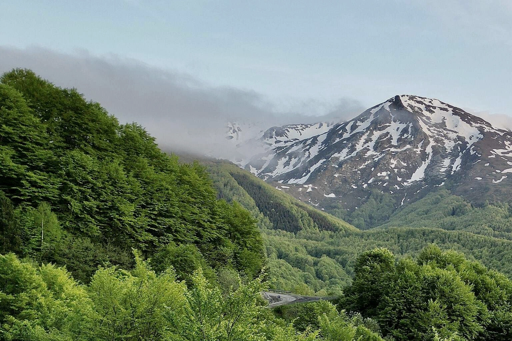
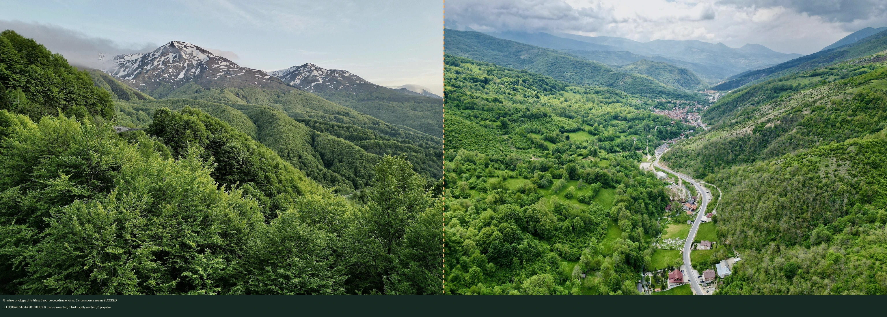
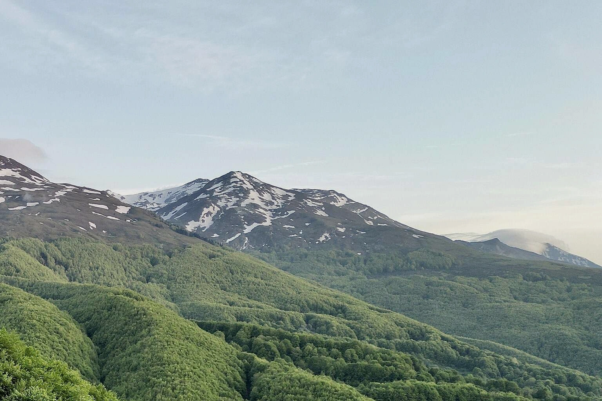
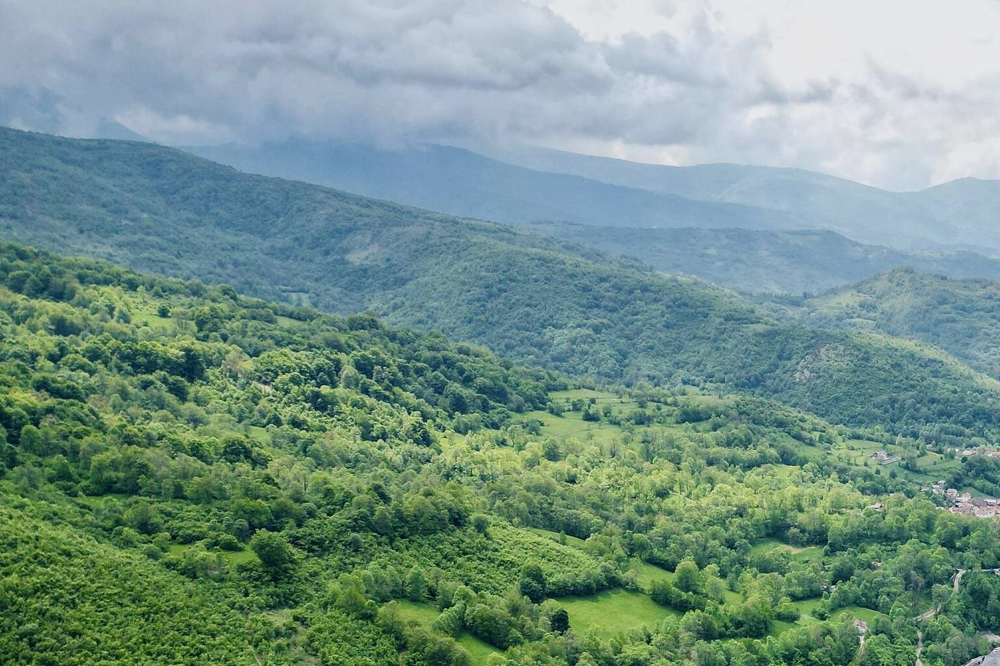
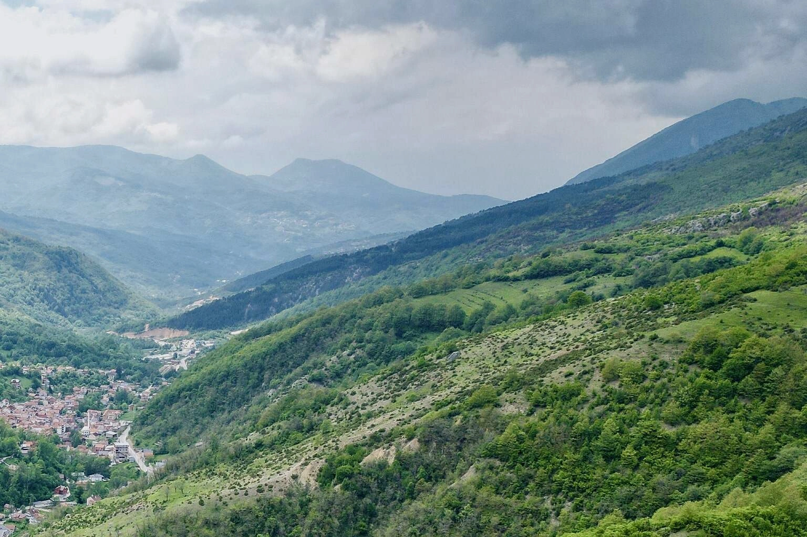
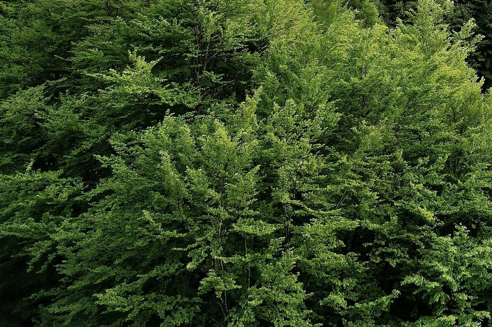
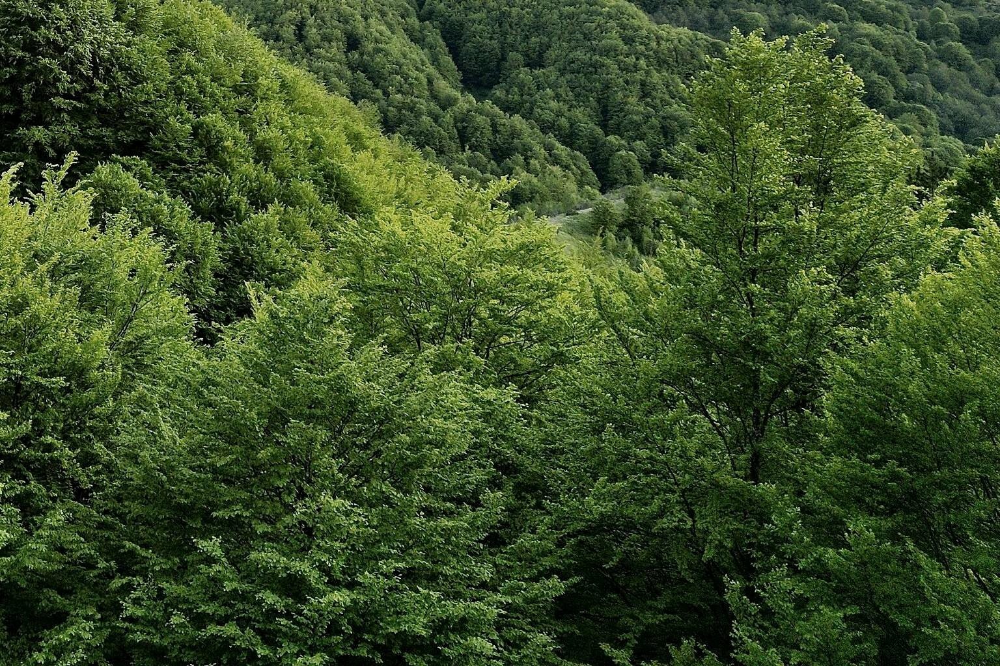
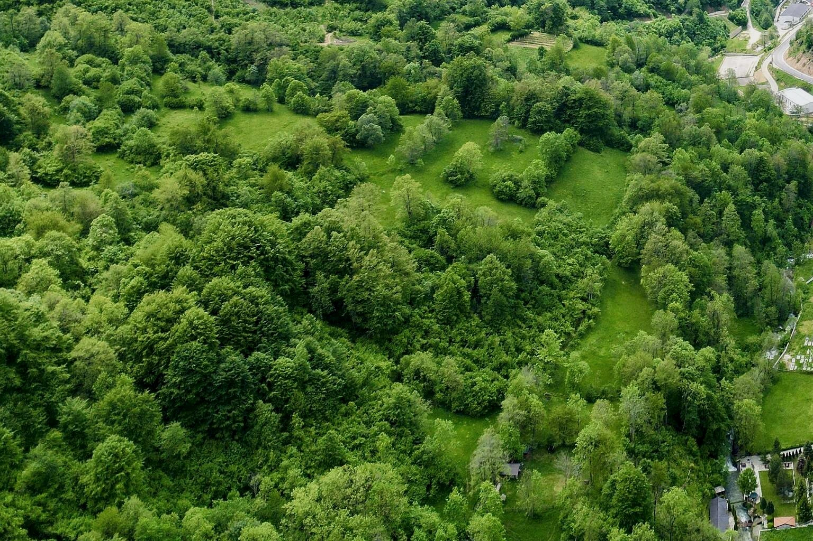
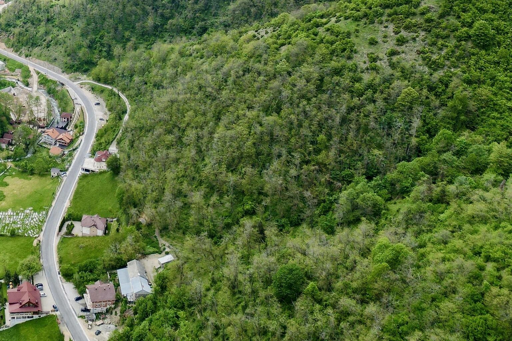

eu-09-16 · sharr-west-native-2x2 · NO gameplay roads
Eight true adjacent photographic crops within two different licensed Sharr sources. Eight exact source-coordinate joins, TWO cross-source joins remain visually UNVERIFIED. All photos illustrative only; no roads, province captures, historic claims or playable cells.


eu-09-16 · sharr-west-native-2x2 · NO gameplay roads

eu-10-16 · sharr-west-native-2x2 · NO gameplay roads

eu-11-16 · sharr-south-native-2x2 · NO gameplay roads

eu-12-16 · sharr-south-native-2x2 · NO gameplay roads

eu-09-17 · sharr-west-native-2x2 · NO gameplay roads

eu-10-17 · sharr-west-native-2x2 · NO gameplay roads

eu-11-17 · sharr-south-native-2x2 · NO gameplay roads

eu-12-17 · sharr-south-native-2x2 · NO gameplay roads
Both original photographs: SUHEJLO, CC BY 4.0, sourced from Wikimedia Commons. Use the native game with ?photoBlock=1 then Integrated Alpine atlas / Photo sources to inspect touch pan and zoom.